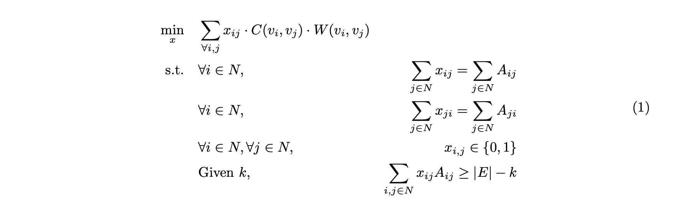

Problem Definition and Algorithms
Formulation
GreedySI
The first proposed algorithm for solving the prob-lem formulated in the last section with 𝑊(𝑣𝑖, 𝑣𝑗)= 1 for every (𝑣𝑖, 𝑣𝑗) ∈ 𝐸 is GreedySI. In GreedySI, steps 5-12 divide edges into 𝑆 and pre-sorted 𝑅 set in ascending order based on cost of edges based on their category. Then, the algorithm loops over every 𝑆𝐼 edge from 𝑆 to find a candidate 𝑆𝑅 or 𝑅𝑅 edge in 𝑅 to rewire. The time complexity of GreedySI is 𝑂(𝑘𝑛2).
def reduce_link(Graph, node_status, budget):
SI_link = []
R_link = []
k_count = 0
if budget is None:
budget = float("inf")
for edge in Graph.edges():
u, v = edge
if node_status[u] == 1 and node_status[v] == 0 or node_status[u] == 0 and node_status[v] == 1:
SI_link.append(edge)
elif node_status[u] == 2 and node_status[v] == 2:
R_link.append(edge)
elif node_status[u] == 2 and node_status[v] == 0 or node_status[u] == 0 and node_status[v] == 2:
R_link.append(edge)
while len(R_link) > 0 and len(SI_link) > 0 and k_count < budget:
S_edge = SI_link.pop()
R_edge = R_link.pop()
if len(set(S_edge).intersection(R_edge)) == 0:
if (S_edge[0], R_edge[0]) not in Graph.edges():
if (S_edge[1], R_edge[1]) not in Graph.edges():
if (np.sum([S_edge[0], R_edge[0]]) != 1) and (
np.sum([S_edge[1], R_edge[1]]) != 1): # exclude possibility to have SI after swapping
Graph.remove_edges_from([S_edge, R_edge])
Graph.add_edges_from([(S_edge[0], R_edge[0]), (S_edge[1], R_edge[1])])
k_count += 1
elif (S_edge[0], R_edge[1]) not in Graph.edges():
if (S_edge[1], R_edge[0]) not in Graph.edges():
Graph.remove_edges_from([S_edge, R_edge])
Graph.add_edges_from([(S_edge[0], R_edge[1]), (S_edge[1], R_edge[0])])
k_count += 1
return Graph
GreedySI+
We propose a improved version of GreedySI, GreedySI+, as the approach to solve for the weighted sum of risk problem formulated above. Given a contact network 𝐺(𝑉,𝐸), the weight for each edge (𝑣𝑖,𝑣𝑗) ∈ 𝐸 is defined as: 𝑊(𝑣𝑖,𝑣𝑗) = 𝑝𝑣𝑖∗𝑞𝑣𝑗 where 𝑝 , 𝑞 are the left and right eigenvectors of the adjacency matrix 𝐴 of 𝐺(𝑉,𝐸) respectively corresponding to the greatest eigenvalues. The above defined weight is a good approximation of the number of decrease in the leading eigenvalue of the adja-cency matrix if removing edge (𝑣𝑖,𝑣𝑗) from the graph 𝐺(𝑉,𝐸)
def get_W(G):
A = adjacency_matrix(G).todense().astype(np.float32) #adjacency matrix of colocation networks
n = A.shape[0]
w, V,_ = scipy.linalg.eig(A, left=True) #left leading eigenvector
p = V[:,np.argmax(w)]
_, q = scipy.linalg.eigh(A, eigvals=(n-1,n-1)) # right leading eigenvector
return np.outer(p,q)
def reduce_link_eigen(Graph, node_status, budget):
# Get W
W = get_W(Graph)
SI_link = []
R_link = []
k_count = 0
if budget is None:
budget = float("inf")
for edge in Graph.edges():
u, v = edge
if node_status[u] == 1 and node_status[v] == 0 or node_status[u] == 0 and node_status[v] == 1:
SI_link.append(edge)
elif node_status[u] == 2 and node_status[v] == 2:
R_link.append(edge)
elif node_status[u] == 2 and node_status[v] == 0 or node_status[u] == 0 and node_status[v] == 2:
R_link.append(edge)
# sort SI_link based on W
SI_link = sorted(SI_link, key=lambda x: W[x[0] - 1, x[1] - 1]) # ascending order
R_link = sorted(R_link, key=lambda x: W[x[0] - 1, x[1] - 1]) # ascending order
while len(R_link) > 0 and len(SI_link) > 0 and k_count < budget:
S_edge = SI_link.pop()
R_edge = R_link.pop()
if len(set(S_edge).intersection(R_edge)) == 0:
if (S_edge[0], R_edge[0]) not in Graph.edges():
if (S_edge[1], R_edge[1]) not in Graph.edges():
if (np.sum([S_edge[0], R_edge[0]]) != 1) and (
np.sum([S_edge[1], R_edge[1]]) != 1): # exclude possibility to have SI after swapping
Graph.remove_edges_from([S_edge, R_edge])
Graph.add_edges_from([(S_edge[0], R_edge[0]), (S_edge[1], R_edge[1])])
k_count += 1
elif (S_edge[0], R_edge[1]) not in Graph.edges():
if (S_edge[1], R_edge[0]) not in Graph.edges():
Graph.remove_edges_from([S_edge, R_edge])
Graph.add_edges_from([(S_edge[0], R_edge[1]), (S_edge[1], R_edge[0])])
k_count += 1
return Graph